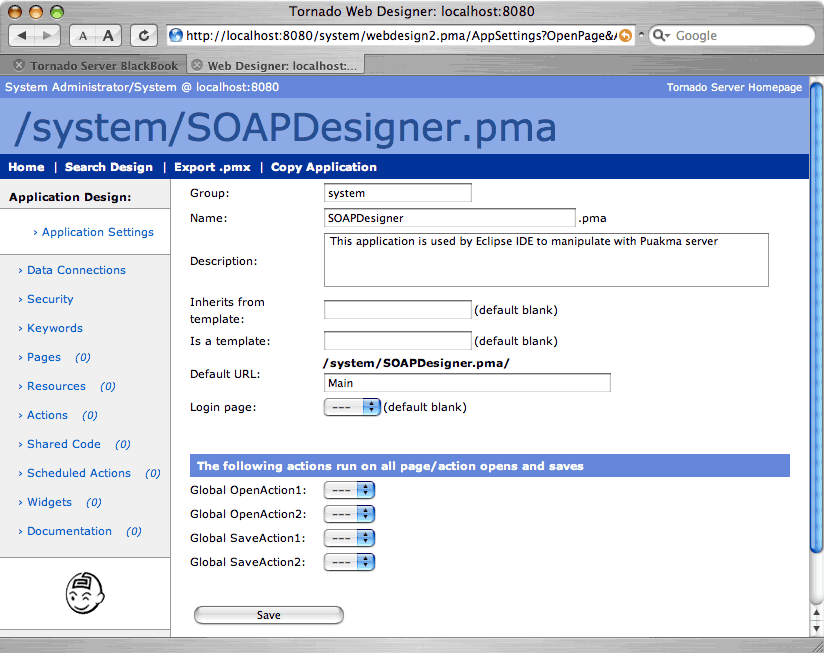

The application settings section provides the basic information about the application, including the URL that will be used to reference the application. You can record comments about what the application’s purpose is, it’s default start page and any global open and save actions (see the Actions section for more information on global actions).
An application specific login page may also be defined here. This is automatically
displayed when a user is requested to log in. If no specific login page is specified,
the default login screen is displayed.
